DOCTYPE html>
DOCTYPE html>
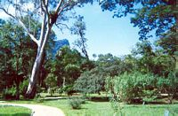
DOCTYPE html>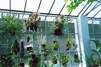
DOCTYPE html> DOCTYPE html>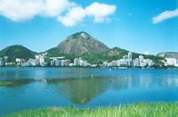
DOCTYPE html>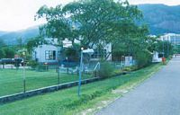
DOCTYPE html>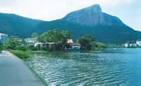
DOCTYPE html>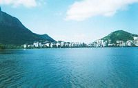
DOCTYPE html>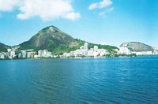
DOCTYPE html>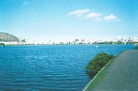
DOCTYPE html>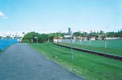
DOCTYPE html>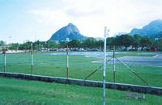
DOCTYPE html>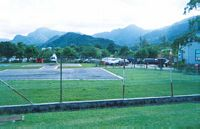
23 mars
DOCTYPE html> Des l'arriv�e, je retourne � l'AJ de Botafogo (voir Rio, 1er episode), et je me mets � la recherche d'un ami Fran�ais qui a ouvert un restaurant, Gilbert.DOCTYPE html> Je prends un bus pour la Barra, a l'autre bout de la ville (mais toujours le long de la plage). Nous traversons Copacabana, Ipanema, Leblon. Le paysage est magnifique, la mer est peupl�e d'�les couvertes de vegetation, les surfeurs ont investi les plages, et les pecheurs les rochers.
DOCTYPE html> La route est une corniche sur deux etages : un sens vers le sud, un vers le nord. Nous traversons un tunnel creuse dans un des immenses rochers, ou morro, qui delimitent les quartiers de la ville.
DOCTYPE html> La Barra est une immense �t�ndue parsem�e de buidings tr�s modernes, c'est un quartier neuf. Je descends du bus et traverse un poont, longe un lac, appele le lac des pecheurs, et marche jusqu'au centre commercial o� se trouve le restaurant. L'entr�e du centre est gard�e, comme tout ce qui a de la valeur a Rio. J'y apprends que le restaurant est ferme depuis plus d'un an, mais apr�s moult negociations-traductions avec plusieurs interlocuteurs, j'obtiens une nouvelle adresse : Ipanema, pr�s du canal (appel le Jardin d'Alah) qui delimite la frontiere entre les quartiers Ipanema et Leblon.
DOCTYPE html> Lac, pont, bus, plage, tunnel : retour a Ipanema, a la recherche des restaurants fran�ais du coin. Je trouve enfin mon bonheur apr�s 2 essais. Cette petite recherche m'a pris l'apr�s-midi, mais j'aurai au moins vu une bonne partie de Rio (du moins la partie "frequentable" pour un touriste).
DOCTYPE html> Gilbert m'accueille, il me dit que j'ai de la chance, car il est normalement ferme le lundi. Aujourd'hui il est avec deux photographes, il y � un plat de fruits de mer sur la table, entoure par des appareils, des projecteurs, des ecrans, sa cuisine va passer dans un magazine culinaire (regional ou international, je en sais plus). Le restaurant lui-meme est super-classe, dans le quartier le plus chic de Rio, Je passe le debut de la soir�e a discuter avec Gilbert et les photographes, ils parlent Fran�ais, en degustant les stars du jour.En fin de soir�e, Gilbert me raccompagne a mon AJ.
DOCTYPE html>
24 mars
DOCTYPE html> Ballade a Copacabana (je ne m'en lasse pas), puis je contacte Marina et Arnaud. Je passe la soir�e chez eux, avec deux de leurs amis, Alain et Delphine, qui sont en vacances. Repas excellent, il est convenu que je demenage chez M&A des le lendemain.DOCTYPE html>25 mars
DOCTYPE html> Je suis installe dans le salon chez M&A jusqu'au d�part de Delphine et Alain, le lendemain. L'appartement du 5eme etage est gigantesque, la baie vitr�e du salon donne sur le lac interieur de Rio, et le Corcovado avec a son sommet le Cristo Redentor (mais �a c'est normal, on peut le voir de tout Rio, c'est un peu comme la tour Eiffel). DOCTYPE html> Je fais enfin la connaissance des deux enfants de M&A, Evan (4 ans) et Elya (1 an). J'aurais pu le faire a Paris, alors qu'ils habitaient le 13eme arrondissement, mais c'aurait �t� trop simple. Je fais egalement la connaissance de Bernadette, leur femme de menage, et j'essaie de la brancher sur les beiju (les galettes de tapioca). C'est decide, je vais m'essayer � la cuisine : il suffit d'ach�t�r la farine de tapioca, j'ai d�j� vu faire les galettes, c'est enfantin.{kind=link}
DOCTYPE html>
26 mars
DOCTYPE html> J'ai rendez-vous avec Gilbert pour faire le marche, j'ai toujours voulu savoir quelles courses on pouvait bien faire pour un restaurant. A 9h30, surprise, Gilbert m'amene au sommet du Corcovado, dans la pur�e de pois absolue. On ne voit pas a 30m, �a me rappelle le Machu Picchu. Apr�s environ une demi-heure, la vue se d�gag�, quartier par quartier. La vue est splendide, mais le temps est assez changeant. Nous redescendons par la foret du Corcovado sous la pluie battante. Apr�s les courses, je retourne � l'appartement de M&A, et j'accompagne Marina, Delphine et Alain pour la tourn�e des magasins d'Ipanema. Sacs a main, bijoux, la patience d'Alain fut exemplaire.DOCTYPE html>
27 mars
DOCTYPE html> Je decide d'aller visiter le jardin botanique. �a commence par le tour de la moitie du lac � pied. Il y a deux-trois �les sur le bord du lac, ce sont des clubs prives, avec une rang�e de "parking valets" qui attendent � l'entr�e, on accede au club par un adorable petit bac, sur un trajet d'a peine dix metres. Il y a des terrains de tennis, une promenade, le reste est cache � la vue du bon peuple.DOCTYPE html> Un heliport, un club d'aviron, un hippodrome, ce lac est une �le de richesse au milieu des favelas. J'arrive apr�s moult detours dans un parc, que j'ai pris au debut pour le jardin botanique, et j'en fais le tour en une heure. Il est d�j� passe 17 heures et le jardin botanique est ferme aux visites. J'irai demain. C'est agreable de pouvoir prendre son temps.
DOCTYPE html>
28-29 mars
DOCTYPE html> Diverses visites et promenades dans Rio, surtout les plages, et enfin le jardin botanique. Il n'y a presque personne. Le jardin est immense, la diversite et le gigantisme des plantes coupe le souffle. Quelques animaux vivent la, en toute liberte. J'apercois des primates qui font les cons entre les branches des arbres, et aussi quelques toucans, facilement reconnaissables. Je vois meme un ecureuil. Des fourmis forment des longues files entre les all�es du parc, je reste les regarder pendant une demi-heure. J'ai dix ans.DOCTYPE html> Je m'essaie aux beiju et recois une aide precieuse d'Evan, qui adore faire la cuisine. Malheureusement, nos efforts sont vains, tout ce que nous arrivons a faire, c'st repandre une odeur de brule dans tout l'appartement.
DOCTYPE html> Le samedi soir (le 29), je sors dans Copacabana. Apr�s avoir arpente la zone de long en large, j'abandonne car la rue est peu anim�e, il faut "entrer pour voir". Je prends donc un taxi pour Santa Theresa, le quartier artistique de Rio. Je me retrouve dans une rue tr�s anim�e, pleine de monde, le long des arches blanches d'un viaduc. La musique vient de partout. Tous les bars sont largement ouverts sur la rue, un groupe qui joue sous un kiosque, ou tout simplement un sound system pose sur le trottoir diffuse du rap au volume maximum. Il y a meme une batterie, sous une des arches du pont. �a me rappelle terriblement l'ambiance du carnaval.
DOCTYPE html>
30 mars
DOCTYPE html> Apr�s un tour � la Rodoviaria, je prends le ferry pour Niteroi, une promenade de 30 minutes environ, nous passons devant l'a�roport, les avoins decollent au ras de l'eau et virent brusquement en pleine ascension pour eviter un Morro. Un pont immense relie Rio a Niteroi. Je prends quelques photos du mus�e d'art moderne de Niteroi, une soucoupe volante imagin�e par Oscar Niemeyer.DOCTYPE html> Je rentre apr�s le coucher du soleil, Rio vu de Niteroi est superbe.
DOCTYPE html>
1er avril
DOCTYPE html> Apr�s avoir fait mes adieux a Marina et Arnaud, je quitte Rio pour Foz de Iguazu, repose et repu.DOCTYPE html>
DOCTYPE html>